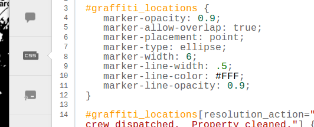
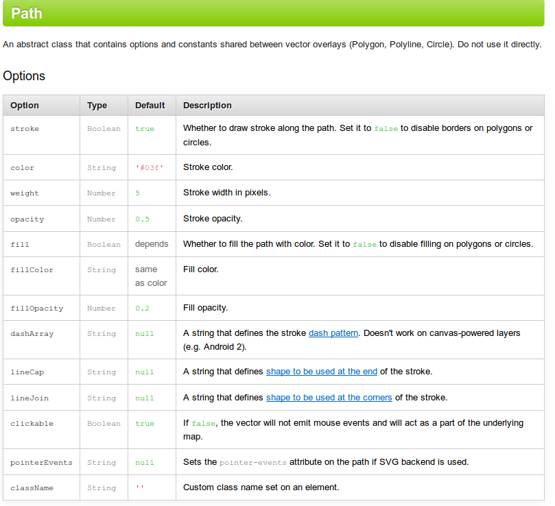

Getting Stylish with Leaflet
bit.ly/
Leaflet doesn't use CartoCSS.

Instead, you style your features in code.

(open this, you'll want to have it handy)
Let's take a look at what that really means.
Sometimes you don't want to style everything exactly the same way.
Let's change styles when someone interacts with a feature.
With event-based styling, you almost always want to use
resetStyle()
at some point
Are you tired of looking at code yet?